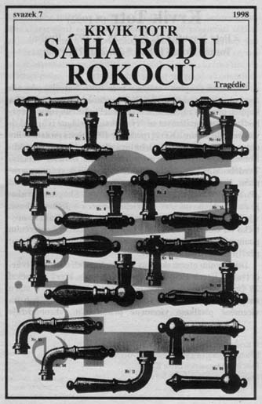

|
Sáha rodu Rokocù, divadelní hra 1997-8 |
|
"Oral jsem rùže a teï jdu na smrt..." |
 |
|
Po dokonèení Našeho Rádia III. si Krvik Totr dali tak dlouhý odpoèinek, že se po nìm nadšenì vrhli do práce - výsledkem bylo album Krví a divadelní hra Sáha rodu Rokocù. Pùvodnì to mìl být jen další povídkový text, Petr Novotný však pod èím dál vìtším vlivem divadla pøešaltoval a z krátké povídky se stala dlouhá hra, již Krvik Totr ku vlastní radosti psali po celé prázdniny 1997. Hra je pochopitelnì všudynepøítomnì opomenuta, protože nemá takovou publicitu jako desky. Uvìdomme si však, že zatímco "historikové" vyzdvihují povídky jako O princi a kapce, ty by nikdy nebyly napsány bez obrovského vypsání, jež obstarala Sáha. - Na podzim prosadil Novotný hru ve vnikajícím školním souboru "Divadlo Velkého Tvrdého Marwina", pro nìž pak Krvik Totr za pouhý mìsíc na poèátku roku 1998 pøepsali, respektive úplnì vymìnili druhý díl hry. Bohužel - spolek se pøes samé brebentìní k divadlu vùbec nedostal. Hra však byla coby pøíloha otištìna v ètrnáctideníku Tvar - a to byla po mnoho let nejvìtší pýcha a první skuteèná meta Krvik Totr. - Na Sáhu rodu Rokocù mìla navázat bez prodlení další hra (Hra o nebe èili HON), jež mìla využít "vyhozenou" druhou èást. Nakonec ale dodnes nevzniklo nic - tolik milovanému divadlu se Krvik Totr dokázali oddat až v roce 2001, úplnì až 2003, za dlouhých šest let. |
Napsáno v kvìtnu-záøí 1997, druhá èást pøepsána v lednu-únoru 1998. Vydáno v dubnu 1998. |
|
© 2003 Krvik Totr Limity. |